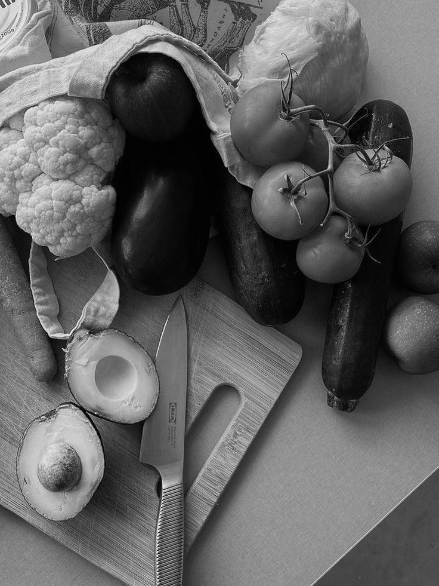

If you’ve ever noticed that some weeks you feel energized and glowing… while other weeks you’re exhausted, bloated, craving chocolate, or emotionally sensitive — that’s not random.
Your hormones naturally shift throughout the month, and those hormonal changes affect:
- Energy
- Metabolism
- Appetite
- Blood sugar
- Mood
- Digestion
- Cravings
- Exercise performance
This is where cycle syncing nutrition comes in.
Instead of fighting your body, cycle syncing helps you support it with foods that work with your hormones during each phase of your cycle.
And no — you don’t need to be perfect. Even small changes can make a difference.
Menstrual Phase (Days 1–5): Your body is shedding the uterine lining + rebuilding nutrients
During your period, both estrogen and progesterone are at their lowest levels. This hormone drop is what triggers menstruation.
Because your body is losing blood, iron, minerals, and energy, this phase is all about replenishment and recovery.
You may naturally feel:
- More tired
- More inward
- Hungrier
- Lower motivation
That’s normal. Your body is literally doing internal repair work. Eating Iron-Rich foods should be your focus during this time.
Food suggestions:
- Grass-fed beef
- Lentils
- Spinach
- Sardines
Your body loses iron during menstruation, and low iron can contribute to:
- Fatigue
- Dizziness
- Brain fog
- Weakness
Iron is essential for producing hemoglobin, which carries oxygen throughout the body.
Research shows menstrual blood loss can significantly affect iron stores, especially in women with heavy periods. Replenishing iron supports energy production and oxygen transport.
Omega-3 fats can help!
Omega-3 rich foods:
- Salmon
- Chia seeds
- Walnuts
- Flaxseeds
During menstruation, inflammatory compounds called prostaglandins increase. High levels are associated with:
- Cramping
- Pain
- Inflammation
Omega-3 fats help calm inflammation and may reduce menstrual discomfort.
Studies found that omega-3 fatty acids may reduce menstrual pain severity by lowering inflammatory prostaglandins.
In the menstrual phase, not only is your energy low, but your digestion also starts to slow down. Eating warm, cooked meals like soups and stews will be easier on digestion because they require less digestive energy than large raw meals.
This can help:
- Reduce bloating
- Improve comfort
- Support energy levels
Follicular Phase (Days 6–14): Estrogen begins rising → energy, mood, and motivation increase
This phase starts after your period ends.
As estrogen rises, many women feel:
- More energized
- More social
- More motivated
- Mentally clearer
Your body is preparing for ovulation, which means it’s building and maturing follicles in the ovaries. Cruciferous vegetables are important during this phase. Here are a few cruciferous vegetables to eat:
- Broccoli
- Cauliflower
- Brussels sprouts
- Cabbage
These vegetables contain compounds called glucosinolates, which help support estrogen metabolism in the liver. When estrogen isn’t properly metabolized, some women may experience:
- Bloating
- Acne
- PMS symptoms
- Heavy periods
Cruciferous vegetables contain indole-3-carbinol and sulforaphane, compounds studied for supporting healthy estrogen metabolism pathways. These vegetables are great to incorporate into your diet!
Another food category worth including is fiber.
High Fiber Foods:
- Flaxseeds
- Oats
- Apples
- Beans
- Avocado
- Asparagus
Fiber helps bind to excess estrogen in the digestive tract so it can be removed from the body. After estrogen does its job, the liver helps process it so it can be removed through:
- Stool
- Urine
- Sweat
But if elimination pathways are sluggish, some estrogen can be reabsorbed back into circulation through the gut instead of leaving the body. Without enough fiber, estrogen can recirculate in the body instead of being eliminated.
Higher fiber intake has been associated with healthier estrogen levels and improved hormone balance. Antioxidants are another great support for your hormones!
As your body prepares for ovulation, cellular activity increases. Antioxidants help protect cells from oxidative stress and support overall reproductive health.
Ovulatory Phase (Around Days 14–16): Estrogen peaks + the body releases an egg
Ovulation is the shortest phase but one of the most important hormonally.
This is often when women feel:
- Most confident
- Most outgoing
- Highest libido
- Best energy
Your metabolism and inflammation levels slightly increase during ovulation.
Why Antioxidants Matter During Ovulation
Foods:
- Berries
- Citrus
- Dark leafy greens
- Bell peppers
Ovulation naturally creates oxidative stress in the body.
Antioxidants help neutralize free radicals and support healthy egg quality and cellular health. Hydration also matters during this phase.
Foods:
- Cucumbers
- Watermelon
- Coconut water
Rising estrogen can affect fluid balance and body temperature. Many women feel warmer or more active during ovulation, increasing hydration needs.
Proper hydration supports:
- Energy
- Digestion
- Hormone transport
- Cervical fluid production
Luteal Phase (Days 15–28): Progesterone rises → PMS symptoms + cravings may appear
After ovulation, progesterone becomes the dominant hormone.
This phase is when many women experience:
- Cravings
- Mood swings
- Bloating
- Fatigue
- Increased hunger
And here’s why:
Your metabolism actually increases slightly during the luteal phase, meaning your body may genuinely need more calories. Try eating complex carbs. It helps with PMS symptoms.
Foods:
- Sweet potatoes
- Quinoa
- Brown rice
- Oats
Complex carbohydrates help stabilize blood sugar and support serotonin production.
When blood sugar constantly spikes and crashes, PMS symptoms often feel worse.
Stable blood sugar levels may help regulate mood and reduce cravings associated with PMS. Carbohydrates also influence serotonin production.
Magnesium-rich foods can also help.
Foods:
- Dark chocolate
- Pumpkin seeds
- Almonds
- Avocados
Magnesium supports:
- Nervous system regulation
- Muscle relaxation
- Sleep
- Mood balance
Low magnesium has been linked to increased PMS symptoms. Studies suggest magnesium supplementation may help reduce PMS-related mood symptoms, bloating, and cramps.
Your body isn’t “working against you.”
It’s communicating with you.
When you understand what’s happening hormonally during each phase, food becomes less about restriction and more about support.
Cycle-syncing nutrition is simply learning to nourish your body in a way that honors what it needs each week.
And remember:
You do not need to do this perfectly to see benefits.
Small, intentional shifts matter.